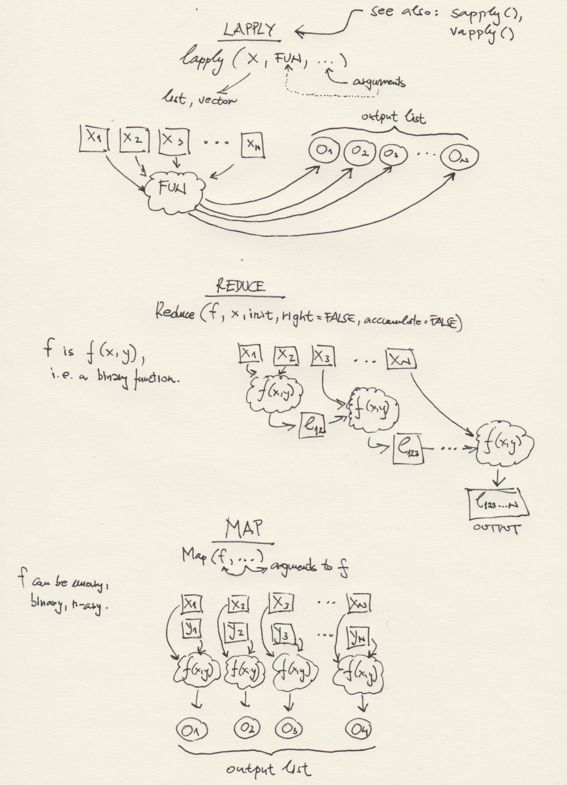

Session04 More Functional Programming + Basic Statistics in R
Goran S. Milovanovic, PhD

More Functional programming + Basic Statistics in R
What do we want to do today?
In this session, we are consolidating and expanding our knowledge and understanding of functional programming in R by applying functionals to calculate basic statistics in a sample of measurements. Additionally, we will review basic descriptive statistics: mean, median, Q1, Q3, IQR, minimum, maximum, variance, and standard deviation. As the final new concept of functional programming in R introduced during the course, we will present function factories: functions that create functions!
1. Descriptive Statistics + Reminder on Vectorization and Recycling
Let us use this chapter, in which we will revisit the important feature of vectorization in the R programming language, to introduce – and some we have already used – basic statistical functions!
REMEMBER: Element-wise operations!
A vector:
v1 <- c(1,2,3,4,5,17)
print(v1)## [1] 1 2 3 4 5 17Everything is a vector, even a single numerical value:
a <- 5
print(a[1])## [1] 5print(a)## [1] 5Recycling:
v1 <- 5
v2 <- c(2,3,4)
print(v1 + v2)## [1] 7 8 9Be careful:
v1 <- c(1,2)
v2 <- c(2,3,4)
print(v1 + v2)## [1] 3 5 5Recycling and mean()
v1 <- c(1,2,3)
print(mean(v1))## [1] 2v2 <- c(2,3,4)
print(mean(v2))## [1] 3v3 <- c(5,6,7)
print(mean(v3))## [1] 6Length of the whole following expression is 2:
c(mean(v1), mean(v2)) * mean(v3)## [1] 12 18Do not forget about NA values when using
mean():
v1 <- c(1,NA)
v2 <- c(2,3,4)
print(mean(v1) + mean(v2))## [1] NAHuh. Use na.rm=TRUE
v1 <- c(1,NA)
v2 <- c(2,3,4)
print(mean(v1, na.rm=TRUE) + mean(v2, na.rm=TRUE))## [1] 4And always use na.rm=TRUE when you are unsure whether
you will, or will not have to deal with missing values in your data.
Let’s introduce all of the most important descriptive statistics in
R: load the mtcars data and inspect w.
summary():
data(mtcars)
summary(mtcars)## mpg cyl disp hp drat wt
## Min. :10.40 Min. :4.000 Min. : 71.1 Min. : 52.0 Min. :2.760 Min. :1.513
## 1st Qu.:15.43 1st Qu.:4.000 1st Qu.:120.8 1st Qu.: 96.5 1st Qu.:3.080 1st Qu.:2.581
## Median :19.20 Median :6.000 Median :196.3 Median :123.0 Median :3.695 Median :3.325
## Mean :20.09 Mean :6.188 Mean :230.7 Mean :146.7 Mean :3.597 Mean :3.217
## 3rd Qu.:22.80 3rd Qu.:8.000 3rd Qu.:326.0 3rd Qu.:180.0 3rd Qu.:3.920 3rd Qu.:3.610
## Max. :33.90 Max. :8.000 Max. :472.0 Max. :335.0 Max. :4.930 Max. :5.424
## qsec vs am gear carb
## Min. :14.50 Min. :0.0000 Min. :0.0000 Min. :3.000 Min. :1.000
## 1st Qu.:16.89 1st Qu.:0.0000 1st Qu.:0.0000 1st Qu.:3.000 1st Qu.:2.000
## Median :17.71 Median :0.0000 Median :0.0000 Median :4.000 Median :2.000
## Mean :17.85 Mean :0.4375 Mean :0.4062 Mean :3.688 Mean :2.812
## 3rd Qu.:18.90 3rd Qu.:1.0000 3rd Qu.:1.0000 3rd Qu.:4.000 3rd Qu.:4.000
## Max. :22.90 Max. :1.0000 Max. :1.0000 Max. :5.000 Max. :8.000Let’s focus on the mpg column for a moment:
summary(mtcars$mpg)## Min. 1st Qu. Median Mean 3rd Qu. Max.
## 10.40 15.43 19.20 20.09 22.80 33.90Do we have any NAs in mtcars$mpg?
sum(is.na(mtcars$mpg))## [1] 0No. Let’s go over statistics, one by one. Minimum,
min():
min(mtcars$mpg)## [1] 10.4Maximum, max():
max(mtcars$mpg)## [1] 33.9The median is the middle value in an ordered set of numbers. To find it, you first sort the data from smallest to largest:
- If there is an odd number of values in the dataset, the median is the single middle value.
- If there is an even number of values, the median is the average (mean) of the two middle values.
Median, med():
median(mtcars$mpg)## [1] 19.2Q1 (First Quartile): This is the value that marks the 25th percentile of a dataset, meaning 25% of the data values lie below \(Q_1\) and 75% lie above it.
Q3 (Third Quartile): This is the value that marks the 75th percentile of a dataset, meaning 75% of the data values lie below \(Q_3\) and 25% lie above it.
IQR (Interquartile Range): This is a measure of the spread of the middle 50% of the data. It is calculated as: \[ \mathrm{IQR} = Q_3 - Q_1. \]
Introducing the quantile() function, p=.25
for Q1:
quantile(mtcars$mpg, p = .25)## 25%
## 15.425p=.75 for Q3:
quantile(mtcars$mpg, p = .75)## 75%
## 22.8and of course, p=.50 for the median:
quantile(mtcars$mpg, p = .5)## 50%
## 19.2What is missing from R’s summary()?
Measures of dispersion (also called measures of spread or variability) describe how scattered or spread out the data values are around a central point (such as the mean or median). Two key measures of dispersion are variance and standard deviation:
- Variance
- Variance measures how far each data point in a set is from the
mean.
- It is calculated as the average of the squared differences between
each data point and the mean.
- For a population of size \(N\) with mean \(\mu\), the variance (\(\sigma^2\)) is:
\[ \sigma^2 = \frac{\sum_{i=1}^N (x_i - \mu)^2}{N}. \]
- For a sample of size \(n\) with sample mean \(\bar{x}\), the sample variance (\(s^2\)) is typically computed as:
\[ s^2 = \frac{\sum_{i=1}^n (x_i - \bar{x})^2}{n - 1}. \]
- The difference in denominators (\(N\) vs. \(n-1\)) reflects a bias correction when estimating population variance from a sample (this is known as Bessel’s correction).
- Variance measures how far each data point in a set is from the
mean.
- Standard Deviation
- Standard deviation is the square root of the variance.
- It is often preferred in reporting because it has the same units as
the original data, making it easier to interpret as the “average”
distance from the mean.
- Population standard deviation:
\[ \sigma = \sqrt{\sigma^2} \]
- Sample standard deviation:
\[ s = \sqrt{s^2} \]
- Standard deviation is the square root of the variance.
Together, variance and standard deviation give a sense of how “spread out” or concentrated the data values are around the mean.
var(mtcars$mpg)## [1] 36.3241sd(mtcars$mpg)## [1] 6.026948sd(mtcars$mpg) == sqrt(var(mtcars$mpg))## [1] TRUEAnother thing that you might wish to take a look at is IQR:
IQR (Interquartile Range) is a measure of dispersion that focuses on the “middle 50%” of the data. Specifically, it is defined as the difference between the third quartile (\(Q_3\)) and the first quartile (\(Q_1\)):
\[ \text{IQR} = Q_3 - Q_1. \]
- \(Q_1\) (the first
quartile) is the value at or below which 25% of the data lie.
- \(Q_3\) (the third quartile) is the value at or below which 75% of the data lie.
Because it relies on quartiles rather than every data point, the IQR is less sensitive to outliers than measures like the variance or standard deviation. It provides a concise summary of the “typical spread” in the central portion of the data.
IQR(mtcars$mpg)## [1] 7.375quantile(mtcars$mpg, p=.75) - quantile(mtcars$mpg, p=.25) ## 75%
## 7.3752. Visualizing Descriptive Statistics: The Box Plot
Numbers and numbers only… Data visualization is way better
to understand the data than by just looking at numbers. Let’s begin with
the base R function boxplot() to visualize only one
variable, mtcars$qsec, and learn what boxplots are for. As
you will see, they are among the most helpfull tools to understand the
distribution of the values of some measurement in statistics.
boxplot(mtcars$qsec,
horizontal = TRUE,
xlab = "qsec",
col = "darkorange",
main = "Boxplot: qsec")The thick line in the box stands where the median of the
mtcars$qsec is found. The box is bounded by Q1 (25%) from
the left and Q3 (75%) from the right. The width of the box thus equates
the IQR - Interquartile Range - which is the difference
between Q3 and Q1: IQR = Q3 - Q1. What about the length of
the whiskers, and why is there that lonely point to the right marked?
That needs some discussion:
## NOTE: Boxplot "fences" and outlier detection
# Q3 = 75 percentile, Q1 = 25 percentile
Q3 <- quantile(mtcars$qsec, .75)
Q3## 75%
## 18.9Q1 <- quantile(mtcars$qsec, .25)
Q1## 25%
## 16.8925# IQ = Q3 - Q1; Interquartile range
IQR <- unname(Q3 - Q1)
IQR## [1] 2.0075The definitions of the fences used in R are:
- Lower inner fence:
Q1 - 1.5*IQR - Upper inner fence:
Q3 + 1.5*IQR - Lower outer fence:
Q1 - 3*IQR - Upper outer fence:
Q3 + 3*IQR - A point beyond an inner fence on either side is considered a mild outlier
- A point beyond an outer fence is considered an extreme outlier
Now, let’s find out about the outlier to the right of the boxplot’s whiskers in our plot:
lif <- Q1 - 1.5*IQR
uif <- Q3 + 1.5*IQR
lof <- Q1 - 3*IQR
uof <- Q3 + 3*IQR
mtcars$qsec[mtcars$qsec > uif]## [1] 22.9mtcars$qsec[mtcars$qsec > uof]## numeric(0)Conclusion: there is one point in mtcars$qsec that is
positioned above the upper inner fence in the boxplot, and that
one point represents a mild outlier because it does not go
beyond the upper outter fence. There are no outliers bellow
lower fences in mtcars$qsec.
We have found one outlier… And that would be your first step on the road to anomaly detection in Data Science!
Now, can we visualize more than one variable in the
mtcars dataset and thus try to understand the dataset as a
whole, or at least a large part of it? Of course:
boxplot(mtcars[ , c('mpg', 'disp', 'hp', 'drat', 'wt', 'qsec')],
horizontal = FALSE,
xlab="qsec",
ylab = "value",
col = "darkorange",
main = "Boxplot")
But the variables seem to be on different scales. What can often help in situations like this one is to use the logarithmic scaling:
boxplot(mtcars[ , c('mpg', 'disp', 'hp', 'drat', 'wt', 'qsec')],
horizontal = FALSE,
xlab="qsec",
ylab = "log(value)",
log = "y",
col = "indianred",
main = "Boxplot: qsec")
But is now also difficult to understand the distributions of a particular variable in the boxplot.
While even base R offers great means to visualize data, {ggplot2} is the industrial standard data visualization package and it is definitely way, way better. We will now begin our study of the anatomy of a ggplot2 plot using our boxplot as an example.
In order to produce a boxplot with ggplot2, mtcars first need to be transformed from the wide data representation format into a long data representation format:
library(tidyverse)
mtcars$id <- 1:dim(mtcars)[1]
mtcarsPlot <- mtcars %>%
dplyr::select(id, mpg, disp, hp, drat, wt, qsec) %>%
tidyr::pivot_longer(cols = -id,
names_to = "Measurement",
values_to = "Value")
head(mtcarsPlot, 30)## # A tibble: 30 × 3
## id Measurement Value
## <int> <chr> <dbl>
## 1 1 mpg 21
## 2 1 disp 160
## 3 1 hp 110
## 4 1 drat 3.9
## 5 1 wt 2.62
## 6 1 qsec 16.5
## 7 2 mpg 21
## 8 2 disp 160
## 9 2 hp 110
## 10 2 drat 3.9
## # ℹ 20 more rowsDo you understand the difference between long and
wide data formats? We will discuss it live in our
session! The select() function used in the code above is
from the {dplyr} package: it simply selects only the
desired columns from a dataframe. Then, the pivot_longer()
function, from the {tidyr} package, transform the wide
mtcarsinto the long mtcarsPlot following the
addition of the id column to mtcars because we
want to keep track of the mapping between models (i.e. rows, records) in
the original dataset and its long format! The pipe
operator - %>% - works in the following way
(note: a simplified explanation follows):
- begin with a data set, pipe it to
- a transformation, then pipe the result of the transformation to
- another transformation, then …
- etc.
Pipes are ideal to chain data transformations in R!
Now, the boxplot with {ggplot2}:
ggplot(data = mtcarsPlot,
aes(x = Measurement,
y = Value,
fill = Measurement)) +
geom_boxplot() +
ggtitle("mtcars boxplot") +
theme_bw() +
theme(panel.border = element_blank()) +
theme(plot.title = element_text(hjust = .5)) +
theme(legend.position = "top")Note. We use + to chain the layers in
{ggplot2} visualizations, similarly as we use the pipes to chain data
transformations. Do not confuse + as used to build a
{ggplot2} visualization with + as an arithmetic operation
or %>%.
3. More Functional Programming + Function Factories
Here is a schematic overview of some R functions that are typically
used in functional programming. The one at the bottom -
Map(f, ...) - we have not used yet. But we will, at some
point, and it is also pretty intuitive, e.g. for two lists,
x, y, and a binary function
f(x,y), Map(f, x, y) returns
f(x[[1]], y[[1]]), f(x[[2]], y[[2]]), .., f(x[[n]], y[[n]]).
Map() can use n-ary functions, i.e. f can have
as many arguments as needed.

3.1 Lapply(), Sapply(), Apply()
In R, the functions apply(), lapply(), and sapply() are part of the “apply family,” which provides a convenient way to iterate over data structures (like vectors, lists, matrices, or data frames) without writing explicit loops. Here’s an overview of each function:
1. apply()
Purpose:
- Primarily used to apply a function to the rows or columns of matrices
or arrays.
Typical Usage:
apply(X, MARGIN, FUN, ...)X: A matrix or array.MARGIN: A numeric vector indicating the dimension(s) over which the function is applied.MARGIN = 1→ apply function over rows.MARGIN = 2→ apply function over columns.- For multi-dimensional arrays, you can use something like
MARGIN = c(1,3)to apply over specific dimensions.
FUN: The function to apply....: Additional arguments passed to the function.
Examples:
# Create a matrix
m <- matrix(1:9, nrow = 3)
# Calculate the mean of each row
apply(m, 1, mean)
# Calculate the sum of each column
apply(m, 2, sum)2. lapply()
Purpose:
- Used to apply a function to each element of a list (or vector),
returning the results in a list of the same length.
Typical Usage:
lapply(X, FUN, ...)X: A list or vector.FUN: The function to apply to each element ofX....: Additional arguments passed to the function.
Examples:
# Create a list of numeric vectors
my_list <- list(a = 1:5, b = 6:10, c = c(10, 20, 30))
# Use lapply to get the sum of each vector
lapply(my_list, sum)
# Use lapply to calculate the mean of each vector
lapply(my_list, mean)lapply() always returns a list, even if
the function returns a single number for each element.
3. sapply()
Purpose:
- Similar to lapply(), but tries to
simplify the result into a vector, matrix, or array if
possible.
Typical Usage:
sapply(X, FUN, ..., simplify = TRUE, USE.NAMES = TRUE)X: A list or vector.FUN: The function to apply....: Additional arguments to pass to the function.simplify: Logical flag or character string indicating how to simplify the result. Default isTRUE.USE.NAMES: Logical flag indicating whether to preserve names. Default isTRUE.
Examples:
# Same list as before
my_list <- list(a = 1:5, b = 6:10, c = c(10, 20, 30))
# Calculate means using sapply
sapply(my_list, mean)If each call to FUN returns a single, non-list value,
sapply() simplifies the result to a numeric
vector. If each call returns a vector of the same length >
1, sapply() can simplify to a matrix.
Key difference from lapply():
- lapply() always returns a list. - sapply()
will try to return a simpler R object (vector or
matrix). If it cannot simplify, it falls back to a list.
Summary
apply(): For matrices/arrays. Iterates over rows/columns (or specified dimensions) to apply a function. Returns a vector, list, or array depending on the function’s output.
lapply(): For lists (or vectors). Applies a function to each element and always returns a list.
sapply(): For lists (or vectors). Applies a function to each element and simplifies the result (if possible) into a vector, matrix, or array.
These functions help write more concise, “vectorized” code, reducing the need for explicit loops and often making R code more idiomatic and easier to read.
v1 <- 1:100
# - power() function
power <- function(x) {
# code blocks...
return(x^2)
}
# - silly functional:
squares <- lapply(v1, power)
class(squares)## [1] "list"print(head(squares, 10))## [[1]]
## [1] 1
##
## [[2]]
## [1] 4
##
## [[3]]
## [1] 9
##
## [[4]]
## [1] 16
##
## [[5]]
## [1] 25
##
## [[6]]
## [1] 36
##
## [[7]]
## [1] 49
##
## [[8]]
## [1] 64
##
## [[9]]
## [1] 81
##
## [[10]]
## [1] 100Again, sapply() will try to simplify, as the name
suggests:
squares <- sapply(v1, power)
print(head(squares, 10))## [1] 1 4 9 16 25 36 49 64 81 100print(class(squares))## [1] "numeric"Now, apply() is a bit more complicated… Let’s create a
2D data structure, i.e. a matrix:
m1 <- matrix(data = c(1,2,3,4),
ncol = 2)
print(m1)## [,1] [,2]
## [1,] 1 3
## [2,] 2 4Remember sum()?
sum(c(1,2))## [1] 3Now, apply() sum() over
rows:
apply(X = m1, MARGIN = 1, FUN = sum)## [1] 4 6And apply() sum() over
columns:
apply(X = m1, MARGIN = 2, FUN = sum)## [1] 3 73.2 Reduce()
In R, the Reduce()
function is used to iteratively apply a binary function
(a function of two arguments) to elements of a vector or list,
ultimately reducing them to a single value. It is part of R’s functional
programming tools (along with functions like Filter(),
Find(), Map(), etc.) and closely resembles the
concept of “fold” or “reduce” operations in other programming languages
(e.g., in Lisp or Python).
Basic Usage
Reduce(f, x, init, right = FALSE, accumulate = FALSE)f: The binary function you want to apply.
x: The vector (or list) of elements to whichfwill be applied.
init: An optional initial value. If provided, the reduction starts withinitand the first element ofx.
right: A logical value indicating whether to apply the function from the right end (TRUE) or the left end (FALSE). The default isFALSE(left to right).
accumulate: A logical value. IfFALSE(default), only the final result is returned. IfTRUE, all intermediate results are returned as a list.
How it works:
Left to right (
right = FALSE):
\[ (((x_1 \; f \; x_2) \; f \; x_3) \; f \; x_4) \cdots \] By default,Reduce()starts with the leftmost element ofxand applies the function to successive elements.Right to left (
right = TRUE):
\[ (x_1 \; f \; (x_2 \; f \; (x_3 \; f \; x_4))) \cdots \] Here, the function is applied in a nested manner starting from the rightmost element.
Examples
1. Summation Example
# Summing elements from left to right
Reduce(`+`, 1:5)## [1] 15This is equivalent to ((((1 + 2) + 3) + 4) + 5), which
results in 15.
2. Multiplication Example
# Multiplying elements from left to right
Reduce(`*`, 1:5)## [1] 120This is equivalent to ((((1 * 2) * 3) * 4) * 5), which
results in 120.
3. Using init
# Start summing with an initial value of 10
Reduce(`+`, 1:5, init = 10)## [1] 25This is equivalent to ((((10 + 1) + 2) + 3) + 4) + 5,
which results in 25.
4. Right to Left
# If we apply subtraction from right to left
vec <- 1:5
Reduce(`-`, vec, right = TRUE)## [1] 3This evaluates as 1 - (2 - (3 - (4 - 5))). Evaluating
step by step:
- (4 - 5) = -1
- (3 - -1) = 4
- (2 - 4) = -2
- (1 - -2) = 3
Hence the result is 3.
5. Accumulating Results
# Keep track of all intermediate results
Reduce(`+`, 1:5, accumulate = TRUE)## [1] 1 3 6 10 15This will return a vector or list (depending on your R version) of
partial sums, e.g.:
\[
[1, 3, 6, 10, 15]
\] (representing the partial sums 1, (1+2), (1+2+3), (1+2+3+4),
and (1+2+3+4+5)).
Why Use Reduce()?
- Functional Style: It can be more concise or expressive in functional-style programming, especially when combined with other functional tools.
- Flexibility: You can supply any binary function,
including user-defined functions, and control the direction
(
rightvs.left) and whether to track intermediate states (accumulate). - Readability: Sometimes, writing
Reduce(sum, x)can be clearer about your intent than a for loop or repeated function calls—especially for more complex operations.
However, for simple operations like summation or product, built-in
functions (sum(x), prod(x)) are typically more
efficient and straightforward. Reduce() shines when you
need a custom or more nuanced
operation that builds on each intermediate step.
Summary
Reduce()iteratively applies a binary function across a vector or list, collapsing it to a single value (or a list of intermediate values ifaccumulate = TRUE).- The optional
initargument sets a starting value. - The
rightargument lets you control whether to reduce from left to right or right to left. - By using
accumulate = TRUE, you can keep track of each intermediate step rather than only the final result.
This makes Reduce() a powerful tool for functional-style
reductions or aggregations in R.
3.3 Map()
In R, the Map()
function applies a given function in parallel to
corresponding elements of one or more vectors or lists, returning the
results in a list. Conceptually, it is similar to
functions like lapply() or mapply() but
focuses on aligning elements of multiple inputs by position.
Basic Usage
Map(f, ...)f: A function to apply....: One or more vectors (or lists) whose elements will be passed tofin parallel.
How it works
Map()takes the first element of each input, passes them all at once tof, then takes the second element of each input, passes them tof, and so on.- It returns a list, regardless of the output type of
f.
Example 1: Summation
# Two numeric vectors of the same length
x <- 1:5
y <- 6:10
# Apply sum() to each pair of elements (x[i], y[i])
result <- Map(sum, x, y)- Internally, R does:
sum(1, 6)sum(2, 7)sum(3, 8)sum(4, 9)sum(5, 10)
- So
resultwill be a list:
[[1]]
[1] 7
[[2]]
[1] 9
[[3]]
[1] 11
[[4]]
[1] 13
[[5]]
[1] 15Example 2: Multiple Arguments
# Define a custom function that takes three arguments
my_func <- function(a, b, c) {
a + b + c
}
# Create three vectors
a_vec <- c(1, 2, 3)
b_vec <- c(10, 20, 30)
c_vec <- c(100, 200, 300)
# Use Map to apply my_func to corresponding elements
Map(my_func, a_vec, b_vec, c_vec)## [[1]]
## [1] 111
##
## [[2]]
## [1] 222
##
## [[3]]
## [1] 333This returns:
[[1]] [1] 111 [[2]] [1] 222 [[3]] [1] 333
Relationship to mapply()
Map(f, x, y, ...)is essentially a wrapper aroundmapply(f, x, y, ..., SIMPLIFY = FALSE).mapply()defaults toSIMPLIFY = TRUE, which tries to simplify the result to a vector or array if possible.
Map()always returns a list, making it more comparable tolapply()but for multiple inputs.
Comparison to Other *apply() Functions
lapply(X, FUN)- Iterates over each element of a single list/vector
Xand appliesFUN, returning a list.
- If you have multiple lists to iterate in parallel, you need to
combine them somehow or use
Map()/mapply().
- Iterates over each element of a single list/vector
sapply(X, FUN)- Like
lapply(), but tries to simplify the result (e.g., to a vector or matrix if possible).
- Like
apply(X, MARGIN, FUN)- Designed for matrices or arrays. Applies
FUNrow-wise, column-wise, or over other dimensions.
- Designed for matrices or arrays. Applies
mapply(FUN, ...)- A multivariate version of
sapply()that iterates in parallel over multiple vectors or lists. By default, it tries to simplify the output.
- A multivariate version of
Map(f, ...)- A simpler, more direct call to
mapply(f, ..., SIMPLIFY=FALSE), ensuring the result is always a list.
- A simpler, more direct call to
Summary
Map()is a convenient way to apply a binary or multi-argument function to corresponding elements of multiple vectors or lists in parallel.
- It returns a list whose length matches the shortest
input provided.
- If you need the output in a simpler form (like a vector or matrix)
and the function naturally produces such data, you might use
mapply()instead (with defaultSIMPLIFY = TRUE).
c1 <- c("Paris", "London")
c2 <- c("France", "UK")
m <- Map(paste, c1, c2)
class(m)## [1] "list"print(m)## $Paris
## [1] "Paris France"
##
## $London
## [1] "London UK"# a binary function
f2 <- function(a, b) {
return(
a^2 + b
)
}
v1 <- 1:20
v2 <- 21:40
m <- Map(f2, v1, v2)
print(m)## [[1]]
## [1] 22
##
## [[2]]
## [1] 26
##
## [[3]]
## [1] 32
##
## [[4]]
## [1] 40
##
## [[5]]
## [1] 50
##
## [[6]]
## [1] 62
##
## [[7]]
## [1] 76
##
## [[8]]
## [1] 92
##
## [[9]]
## [1] 110
##
## [[10]]
## [1] 130
##
## [[11]]
## [1] 152
##
## [[12]]
## [1] 176
##
## [[13]]
## [1] 202
##
## [[14]]
## [1] 230
##
## [[15]]
## [1] 260
##
## [[16]]
## [1] 292
##
## [[17]]
## [1] 326
##
## [[18]]
## [1] 362
##
## [[19]]
## [1] 400
##
## [[20]]
## [1] 4403.4 Function Factories
In R, a function factory is a function that creates and returns another function. Essentially, you write a function (the “factory”) whose output is itself a function. When called, the factory can capture arguments or data in its environment—leading to powerful and flexible programming patterns. These “nested” functions often leverage closures (the enclosing environment that stores variables used by the function).
Why Use a Function Factory?
- Parameterizing functions: You might want to create a family of related functions that differ only by certain parameters. Rather than rewriting the function logic multiple times, you can use a single factory to generate slightly different functions.
- Encapsulation: You can hide internal details (data or parameters) in the function’s environment.
- Reusability: Factories enable you to produce multiple specialized functions from one template.
A Simple Example
A classic illustration is making a “power” function factory, where you generate custom exponentiation functions:
# This function (the factory) takes 'n' and returns a function
# that raises its input 'x' to the power of 'n'.
make_power_func <- function(n) {
# The returned function is a closure that 'remembers' the value of n.
function(x) {
x ^ n
}
}# Create a 'square' function
square_func <- make_power_func(2)
square_func(4) # Returns 16## [1] 16# Create a 'cube' function
cube_func <- make_power_func(3)
cube_func(4) # Returns 64## [1] 64make_power_func(2)returns a new function (a closure) that does \(x^2\).
make_power_func(3)returns a new function that does \(x^3\).
Notice how each returned function “remembers” the value of
n from the factory call.
Summary
- A function factory is simply a function that
returns another function.
- This pattern is particularly useful for creating families of related functions that share core logic but differ by parameters or captured data.
In R, function factories are a powerful technique that can simplify code organization, promote reuse, and maintain a clear, functional style of programming.
Further Readings
Important sources, documentation, etc.
- Advanced R, Hadley Wickham, 2nd edition
- Quick-R - An excellent set of concise R tutorials.
- CRAN: The Comprehensive R Archive Network - This is were the official versions of R packages live
- Colors in R (PDF)
- ggplot2 Reference
- RDocumentation: Search all 21,217 CRAN, Bioconductor and GitHub packages
R Markdown
R Markdown is what I have used to produce this beautiful Notebook. We will learn more about it near the end of the course, but if you already feel ready to dive deep, here’s a book: R Markdown: The Definitive Guide, Yihui Xie, J. J. Allaire, Garrett Grolemunds.
License: GPLv3 This Notebook is free software: you can redistribute it and/or modify it under the terms of the GNU General Public License as published by the Free Software Foundation, either version 3 of the License, or (at your option) any later version. This Notebook is distributed in the hope that it will be useful, but WITHOUT ANY WARRANTY; without even the implied warranty of MERCHANTABILITY or FITNESS FOR A PARTICULAR PURPOSE. See the GNU General Public License for more details. You should have received a copy of the GNU General Public License along with this Notebook. If not, see http://www.gnu.org/licenses/.

Contact: goran.milovanovic@datakolektiv.com

Impressum
Data Kolektiv, 2004, Belgrade.